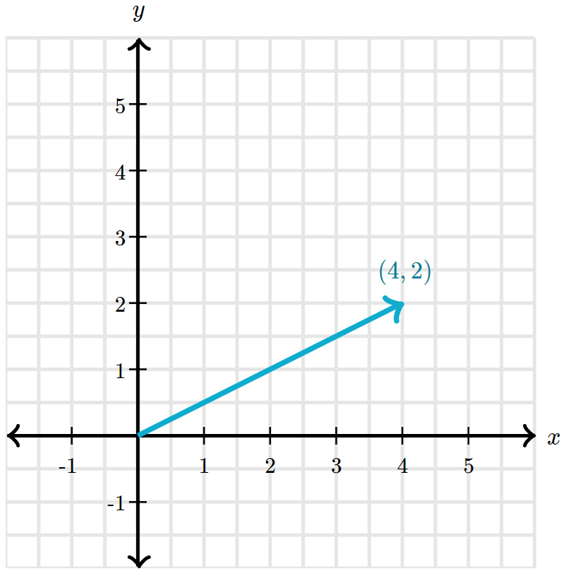
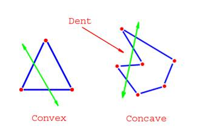

Roughly speaking, there are four stages that our engine loops through to simulate two-dimensional physics. The procedure is as follows:
- Contact Detection
- Contact Resolution
- Force Computation
- State Integration
Then, each frame of our physics engine renders the updated results. We will dive further into each stage, but first, we need to review vectors as they're crucial to understanding and implementing a physics engine.
Vectors
A vector is an object that has both a magnitude and a direction. Intuitively, we can represent this object with an arrow, with the length representing the magnitude and the direction the arrow is pointing indicating the direction.

We can denote a two-dimensional vector like \(\overrightarrow{a} = (a_{x}, a_{y})\). If this vector is represented in the Cartesian coordinate system, this notation means that the tail of the vector is at the origin \((0, 0)\), and the head is at the point \((a_{x}, a_{y})\). For example, if we have \(\overrightarrow{a} = (4, 2)\), it corresponds to this vector:
 Image Credit: Khan AcademyWe can also perform algebraic operations on vectors. Firstly, the length of a vector, denoted by \(||\) \(||\), can be calculated using the Pythagorean theorem. More formally,
\(||\) \(\overrightarrow{a}\) \(||\) = \(\sqrt{a_{x}^{2} + a_{y}^{2}}\)
When a vector is negated, its magnitude remains the same, but its direction reverses. If \(\overrightarrow{a} = (a_{x}, a_{y})\), the negation of \(\overrightarrow{a}\) is:
\(-\overrightarrow{a} = (-a_{x}, -a_{y})\)
You will see why this is useful soon. We can also add two vectors together.
\(\overrightarrow{a} + \overrightarrow{b} = (a_{x} + b_{x}, a_{y} + b_{y})\)
The application of negating a vector becomes immediately obvious. Subtracting two vectors \(\overrightarrow{a}\) and \(\overrightarrow{b}\) is identical to adding \(\overrightarrow{a}\) and \(-\overrightarrow{b}\) . More formally,
\(\overrightarrow{a} - \overrightarrow{b} = \overrightarrow{a} + (-\overrightarrow{b}) = (a_{x} - b_{x}, a_{y} - b_{y})\)
We now move into multiplication. Firstly, vectors can be multiplied by a
scalar quantity, which we will define as any real number. The effect is that
the vector's magnitude is scaled by a factor of the scalar quantity. Moreover, if the scalar
quantity is negative, the direction of the vector reverses.
Let \(s\) be the
scalar quantity:
\(s\overrightarrow{a} = (sa_{x}, sa_{y})\)
There are two ways we can multiply two vectors together. The first way is calculating the dot product of two vectors. It's denoted as \(\overrightarrow{a} \cdot \overrightarrow{b}\) and it is a scalar quantity that essentially describes the "same-ness" of two vectors. There are multiple ways to compute the dot product (which is a commutative operation), but it's easier to calculate it using the components of the two vectors, especially since we are working in two dimensions.
\(\overrightarrow{a} \cdot \overrightarrow{b} = a_{x}b_{x} + a_{y}b_{y}\)
It's also commonly defined as:
\(\overrightarrow{a} \cdot \overrightarrow{b} = ||a|| \times ||b||cos(\theta )\)
Where \(\theta\) is the angle between the two vectors. Although this definition is uglier to implement in code, it can be used to find the angle between two vectors.
\(||a||\times ||b||cos(\theta ) = a_{x}b_{x} +
a_{y}b_{y}\)
\(cos(\theta ) = \frac{a_{x}b_{x} + a_{y}b_{y}}{||a||\times ||b||}\)
\(\theta = cos^{-1}(\frac{a_{x}b_{x} + a_{y}b_{y}}{||a||\times ||b||})\)
Contact Detection
There's a lot to unpack here. First, I'll cover the fundamental algorithms required for this stage of the physics engine and then optimizations that enable better performance.
Representing Objects
To determine if two shapes intersect in our physics engine, we must understand how to represent them.
 Shapes can either be convex or concave. In a convex shape, a line segment
connecting any two points within the shape is always fully contained inside the shape.
Conversely, inside a concave shape, this statement is untrue. Convex shapes are much easier
to work with, and there are many distance/intersection algorithms that we can implement for
them. Consequently, it's desired that we represent all concave objects with a convex shape.
Thus,
we arrive at the famous convex hull problem.
Convex Hull Problem
The convex hull problem is defined as finding the smallest convex polygon that
encloses all the points in a set.
The convex hull of the points given in \(a\) is shown in diagram \(b\). This algorithm can then be used on any concave shape in our physics engine - each vertex is a distinct point, and the convex hull is the convex representation of the object. Since optimization is not a priority yet, we'll first detail an \(O(N^{2})\) algorithm to compute the convex hull, where \(N\) is the number of vertices in the shape.

Let \(S\) be the set of vertices of the shape. The Jarvis march algorithm, animated above, starts at the leftmost point in \(S\), since the convex hull must include this point. Then, we iterate as follows:
X = leftmost point in S
while bestPoint != leftmost point in S:
Add X to the hull
bestPoint := S[0]
for p := each point in S:
if p is on the left of the line formed from X to bestPoint:
bestPoint = p
X = bestPoint If we are at a point on our convex hull \(P_{i}\), we select the next point
\(P_{i+1}\) such that all the points excluding \(P_{i}\) and \(P_{i+1}\) in \(S\) are to the
right of the line formed between \(P_{i}\) and \(P_{i+1}\). Let the leftmost point in \(S\)
be \(L\). Since \(L\) must be included in the convex hull, \(P_{0} = L\), and the
convex hull is built clockwise, terminating when \(P_{i+1} = P_{0}\).
The worst case
is when
the convex hull contains \(N\) vertices, and since we loop through all the points in \(S\)
(note \(|S| = N\)) for every vertex of the hull, our time complexity is \(O(N^{2})\).
The most obvious flaw is that when we approximate a concave shape with a convex shape, the original body loses its concave properties. Usually, this is not a problem, but there are situations where the concave properties are important to the behaviour of an object (such as a cup). For these scenarios, we can use convex decomposition, a method where we represent a concave object as a set of convex shapes.
Testing for Intersections
Now that we can represent objects, we must test whether two convex polygons intersect. To achieve this, we can use the Separating Axis Theorem (SAT), which states that two objects do not overlap if there exists a line (called axis) onto which both the object's projections do not intersect.